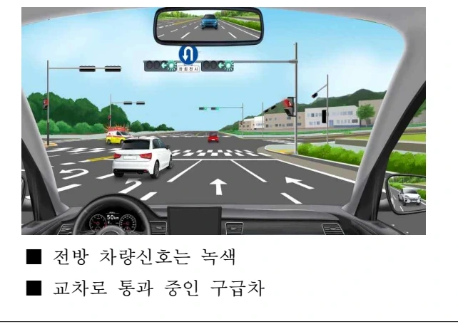

850. Trong tình huống đoạn đường sau, hai cách lái xe đúng nhất là gì?

- ①Tăng tốc và chuyển qua làn số 3 để nhường đường cho xe cứu thương.
- ②Dù đèn tín hiệu giao thông phía trước là màu xanh, vẫn nhường đường cho xe cứu thương.
- ③Sau khi xe cứu thương đi qua, kiểm tra xem có xe khẩn cấp nào khác theo sau không.
- ④Tăng tốc và đi theo xe màu đỏ.
- ⑤Bấm còi báo hiệu với tài xế xe cứu thương và tiếp tục đi qua.
Xem đáp án
Đáp án
② Dù đèn tín hiệu giao thông phía trước là màu xanh, vẫn nhường đường cho xe cứu thương.
③ Sau khi xe cứu thương đi qua, kiểm tra xem có xe khẩn cấp nào khác theo sau không.
Căn cứ
Khi xe ưu tiên đến gần hoặc tại ngã tư, người lái xe phải dừng xe tạm thời để tránh ngã tư. (Điều 29 Luật Giao thông đường bộ). ③ Do tính chất của xe ưu tiên làm nhiệm vụ khẩn cấp nên khả năng cao là sẽ được điều động theo nhóm chứ không phải riêng lẻ nên để tránh tai nạn, họ phải nhường đường cho xe ưu tiên làm nhiệm vụ khẩn cấp đi trước tại ngã tư và kiểm tra sự hiện diện của xe đi sau trước khi khởi hành.
Phần căn cứ là bản dịch máy để tham khảo.